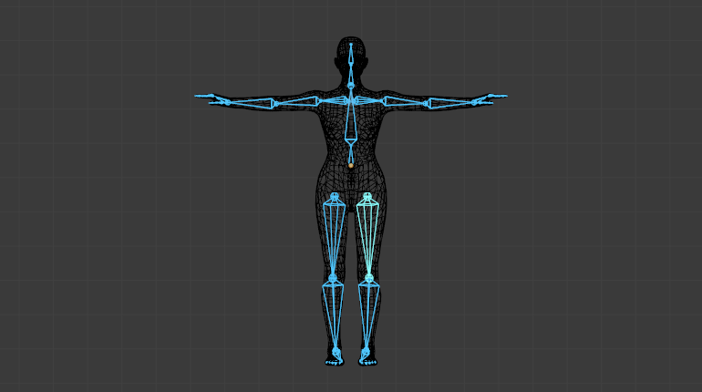

Introduction¶
We have seen in previous pages how to design an armature, create chains of bones, etc. Now, having a good rig is not the final goal, unless you want to produce a "Dance Macabre" animation, you will likely want to put some flesh on your skeletons! Surprisingly, "linking" an armature to the object(s) it should transform and/or deform is called the "skinning" process...

The human mesh skinned on its armature.
In Blender, you have two main skinning types:
- You can Parent/Constrain Objects to Bones -- then, when you transform the bones in Pose Mode, their "children" objects are also transformed, exactly as with a standard parent/children relationship... The "children" are never deformed when using this method.
- You can Use the Armature Modifier on entire Mesh, and then, some parts of this object to some bones inside this armature. This is the more complex and powerful method, and the only way to really deform the geometry of the object, i.e. to modify its vertices/control points relative positions.
Gợi ý
Retargeting
Retargeting, which is a way to apply motion-capture data (acquired from real world) to a rig, is available through add-ons and importers.